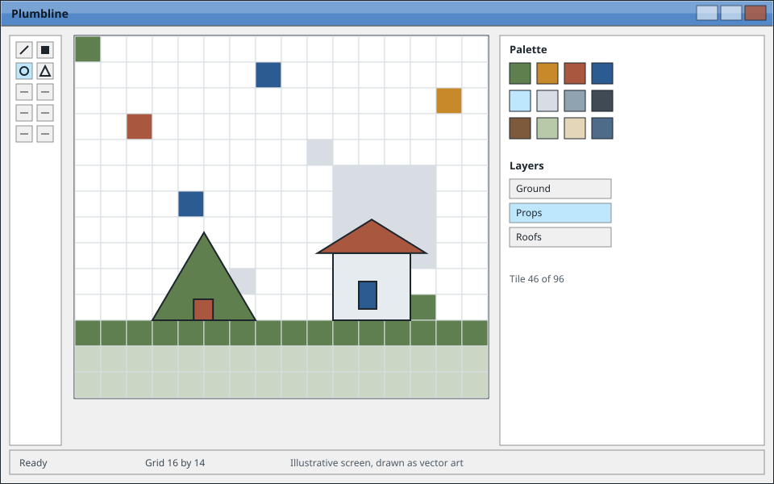

Tin Roof Software
A small editor for small games.
Plumbline draws tiles, lays them into maps and writes one sheet your own code can read. It opens in a single window, keeps its files as plain text, and asks nothing of you at start up.

Everything on this page is illustrative. Plumbline is an invented product written to fill the template, and the screens are drawings rather than photographs of software.
What it is for
Three ideas hold the whole program together, and the rest of it follows from them.
Tiles first
Draw at the size you will ship. The grid is the document, so nothing is resampled on the way out.
Files you can read
A map is a list of tiles and a list of layers, saved as plain text. You can open it in any editor and still recognise it.
One window
Tools on the left, canvas in the middle, palette and layers on the right. Nothing floats away and nothing hides behind anything else.
Where to go next
-
 Open the tour
Open the tourThe tour
How a tile becomes a map, and what each panel of the inspector holds.
-
Open the versions
Versions
An invented changelog, kept in the shape a real one would take.
-
 Open the help
Open the helpHelp
Questions, known limits, and one honest way to get in touch.